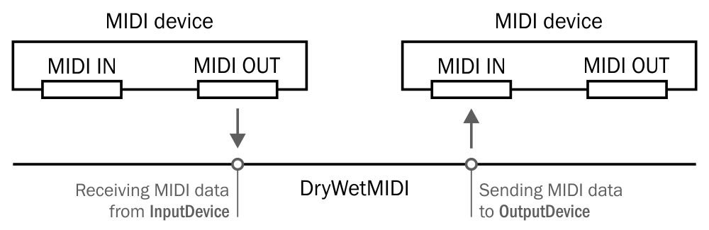

To connect one MIDI device to another there is DevicesConnector class. To understand what input and output MIDI device is in DryWetMIDI, please read MIDI devices article.
Device connector connects an InputDevice with OutputDevice. To get an instance of DevicesConnector class you can use either its constructor or Connect extension method on InputDevice. You must call Connect method of the DevicesConnector to make MIDI data actually go from InputDevice to OutputDevice.
The image below shows how devices will be connected in DryWetMIDI:

Following small example shows basic usage of DevicesConnector:
using Melanchall.DryWetMidi.Devices;
// ...
using (var inputDevice = InputDevice.GetByName("MIDI A"))
using (var outputDevice = OutputDevice.GetByName("MIDI B"))
using (var devicesConnector = new DevicesConnector(inputDevice, outputDevice))
{
devicesConnector.Connect();
}
But to send MIDI data we need an OutputDevice. So below is complete example of transferring MIDI events between devices:
using System;
using Melanchall.DryWetMidi.Devices;
using Melanchall.DryWetMidi.Core;
// ...
using (var inputB = InputDevice.GetByName("MIDI B"))
{
inputB.EventReceived += OnEventReceived;
inputB.StartEventsListening();
using (var outputA = OutputDevice.GetByName("MIDI A"))
{
outputA.EventSent += OnEventSent;
using (var inputA = InputDevice.GetByName("MIDI A"))
using (var outputB = OutputDevice.GetByName("MIDI B"))
using (var devicesConnector = inputA.Connect(outputB))
{
devicesConnector.Connect();
// These events will be handled by OnEventSent on MIDI A and
// OnEventReceived on MIDI B
outputA.SendEvent(new NoteOnEvent());
outputA.SendEvent(new NoteOffEvent());
}
}
}
// ...
private void OnEventReceived(object sender, MidiEventReceivedEventArgs e)
{
var midiDevice = (MidiDevice)sender;
Console.WriteLine($"Event received from '{midiDevice.Name}' at {DateTime.Now}: {e.Event}");
}
private void OnEventSent(object sender, MidiEventSentEventArgs e)
{
var midiDevice = (MidiDevice)sender;
Console.WriteLine($"Event sent to '{midiDevice.Name}' at {DateTime.Now}: {e.Event}");
}
Don't forget to call StartEventsListening on InputDevice to make sure EventReceived will be fired.
Note that you should always take care about disposing a DevicesConnector, i.e. use it inside using block or call Dispose. Without it all resources taken by the devices connector will live until GC collect them. It means that sometimes you will not be able to use different instances of the same device across multiple applications or different pieces of a program.